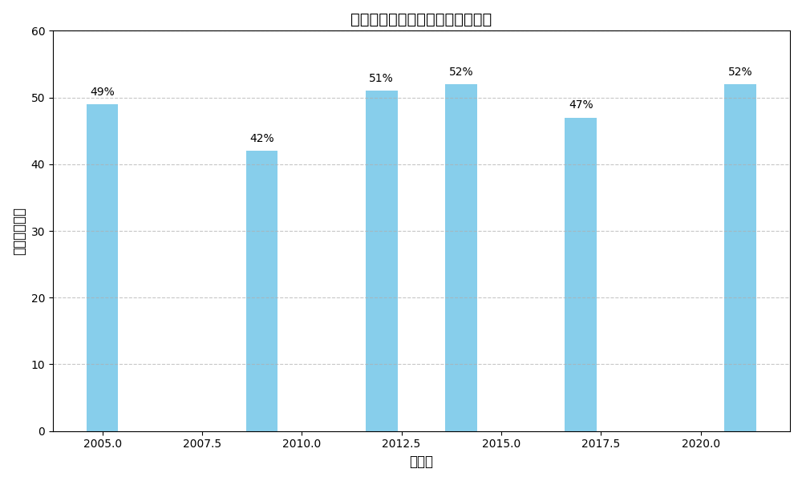
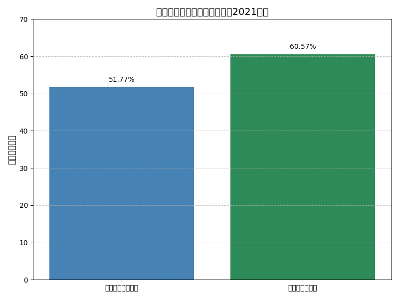
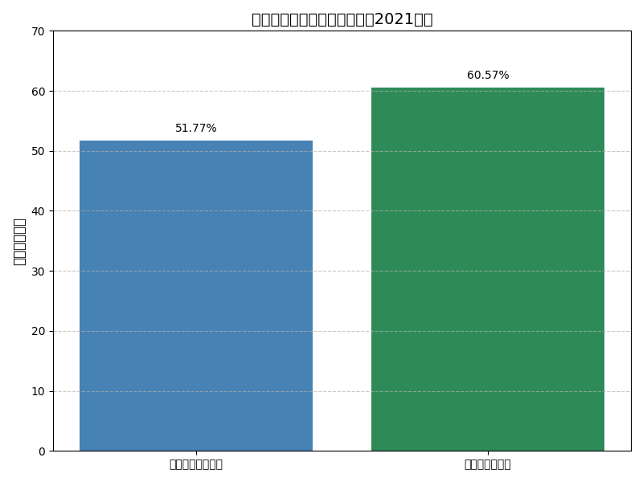

サイトの目的
選挙では当選者以外に投票された票が「死票」として扱われることが多く、民意が十分に反映されない場合があります。このサイトでは、誰が当選しそうかだけでなく、誰に票を渡すことで民意がより反映されるかを考えるきっかけを提供します。戦略的な投票行動を促し、政治参加の質の向上を目指します。
死票とは
死票とは、選挙で当選しなかった候補者に投じられた票のことです。特に小選挙区制では、1人しか当選できないため、他の候補者に投じられた票は結果的に議席に反映されません。2021年の衆議院選挙では、全国で約52%の票が死票となりました。
投票戦略のヒント
戦略的投票とは、支持する候補者が当選する可能性が低い場合に、より当選可能性の高い候補者に票を投じる行動です。これにより、死票を減らし、民意がより反映される結果を導くことができます。特に野党共闘や候補者一本化などの場面で重要な考え方です。
若者と地域の投票傾向
若者の投票率は高齢者に比べて低く、2021年の衆院選では20代が約34.6%、60代以上が約72.2%でした。また、地域によっても投票率に差があり、都市部（東京都）は約51.8%、地方（秋田県）は約60.6%と、地方の方が高い傾向があります。
 

免責事項・中立性の方針
このサイトは選挙運動を目的としたものではなく、政治的中立性を保ちつつ、選挙制度や投票行動に関する情報提供を行うものです。掲載されている情報の一部はAIによって生成されており、正確性には十分配慮していますが、最終的な判断は利用者に委ねられます。
お問い合わせ
ご意見・ご質問は以下のフォームより匿名で受け付けています。
Googleフォームはこちら